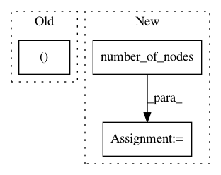

653428bdc7880ebc45b759e675df09ae6eb146f8,python/dgl/runtime/scheduler.py,,_gen_reduce,#Any#Any#Any#Any#,673
Before Change
if rfunc_is_list:
// UDF message + builtin reducer
// analyze e2v spmv
spmv_rfunc, rfunc = spmv.analyze_e2v_spmv(graph, rfunc)
inc = spmv.build_inc_matrix_eid(graph._msg_frame.num_rows, eid, dst,
recv_nodes)
spmv.gen_e2v_spmv_schedule(inc, spmv_rfunc, var_msg, var_out)
After Change
var_out = var.FEAT_DICT(data=tmpframe)
if rfunc_is_list:
num_nodes = graph.number_of_nodes()
adj, edge_map, nbits = spmv.build_gidx_and_mapping_uv(
(src, dst, eid), num_nodes)
// using edge map instead of message map because messages are in global
// message frame
var_out_map = _build_idx_map(recv_nodes, nbits)
spmv.gen_e2v_spmv_schedule(graph=adj,
In pattern: SUPERPATTERN
Frequency: 4
Non-data size: 3
Instances
Project Name: dmlc/dgl
Commit Name: 653428bdc7880ebc45b759e675df09ae6eb146f8
Time: 2019-06-06
Author: ly979@nyu.edu
File Name: python/dgl/runtime/scheduler.py
Class Name:
Method Name: _gen_reduce
Project Name: dmlc/dgl
Commit Name: deb653f8dc9b396ba99d5c66e0658fb056f37a38
Time: 2018-11-22
Author: ly979@nyu.edu
File Name: python/dgl/graph.py
Class Name: DGLGraph
Method Name: recv
Project Name: rusty1s/pytorch_geometric
Commit Name: dcf8c1f9cef00b2d961a80689a5fc772dabeea8f
Time: 2019-06-25
Author: yutai.20m5@gmail.com
File Name: torch_geometric/utils/convert.py
Class Name:
Method Name: from_networkx
Project Name: stellargraph/stellargraph
Commit Name: 59266e34e076ed25852bccf5ce13025b5408406f
Time: 2019-05-28
Author: andrew.docherty@data61.csiro.au
File Name: stellargraph/mapper/node_mappers.py
Class Name: FullBatchNodeGenerator
Method Name: __init__